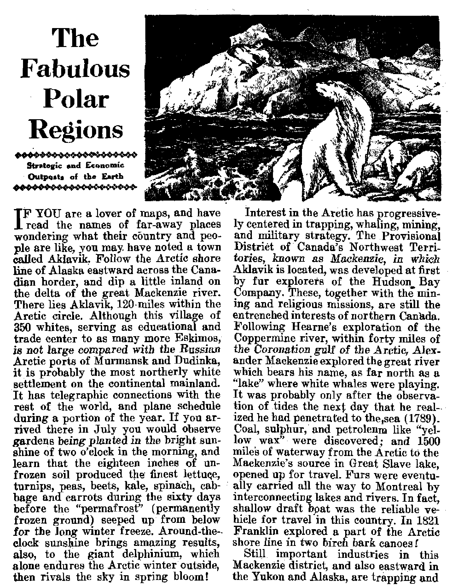
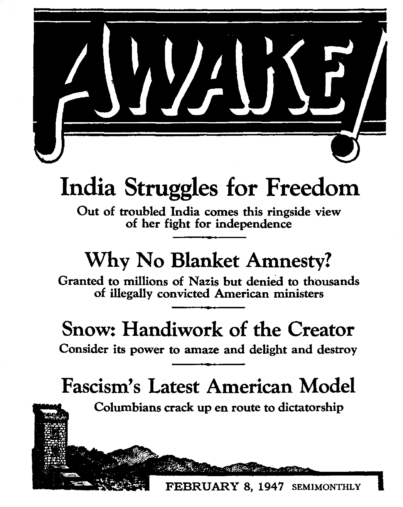

Volume XXVIII
Brooklyn, N. Y., January 22, 1M7
Number 9
"L— ■ ■■-----T—
A MAN throws his arms into the air, runs forward a hundred paces, halts, stands grotesquely poised for the split of a second, and then collapses into the gutter, a red stain slowly spreading over his shirt front. Panic follows. Men rush in all directions away from the scene of the crime, coming to a halt with their backs toward some protecting wall; automatically sorting themselves into little groups of Hindus and Moslems. Moments pass, then some of the same community as the dying man come to his aid. _An ambulance arrives, manned by men of the same or of some neutral community; sometimes followed and at other times preceded by a truckload of soldiers who are disposed at strategic points around. The little groups of scared men gradually regain confidence and break up, going their normal but frightened ways. The morning newspaper adds one more to the number stabbed that day.
A sack lying upon the pavement, deposited there overnight, falls in lines thjt clearly reveal the form of the human body that it contains. You may peer inside if you wish, but to do so is to involve yourself in a string of consequences costing much precious time and accomplishing little or no good. A bus pulls in to the curb, and from it the bus conductor stumbles out and collapses upon the ground. The passengers stream out in panic and are gone. The panic spreads to all around: men rush to get somewhere, anywhere. Somebody assists the conductor back onto the floor of the bus and it is driven off.
Scenes such as these have been witnessed by the thousand in recent months in sad India, chiefly in the riots in Calcutta and Bombay. Deaths have mounted beyonjl 6,000 and the number injured exceeds 13,000. Many are the horrifying signslarging a solution.
Such events come as gruesome comment upon what should have been the most joyful period in the history of this country. For has not India fought for a century to obtain the treasure of freedom T and is it not even now in her grasp T Are her hands strong enough to hold it, we wonder, or must she let it slip through her fingers! For in the high days of her jubilation her voice is turned to weeping. Few are the flags that have appeared in her streets, and even these have become objects of attack by her own nationals; while just as many flags of simple black, symbols of mourning, have intermingled with the orange, yellow and green tricolor of the Congress. So provocative became these signs of rejoicing and mourning that at last the rank and file were asked by their leaders not to aggravate further the festering sore by continuing to display them.
Why are these things! How can a nation both rejoice and mourn in one! Why does hatred accompany the acquiring of freedom; and bloodshed silence the voice of victory? The people of India and in India are thetnselves hard put to. it to answer these questions; how much more so those of the onlooking nations f Whatever the answers, this much is certain: these happenings are not the outcome of any immediate set of causes, but have their roots sunk deeply into the past; they are the outward expression of firmly, entrenched impulses.
Current explanations in the bazaar, or market places, for these events are threefold: first, that these are the outcome of communistic propaganda and the efforts of Russia to control India; second, that it is a further effort on the part of Britain to pursue her policy of “divide and rule”; and, third, that the Moslems and Hindus really comprise two distinct nations and are irreconcilable.
It cannot be easily conceded that communism is the root cause of dissension. The system of political intelligence developed by Britain has shown itself too efficient to permit such a thing. Moreover the effect of such efforts would be felt in the towns only, not in the remote villages where Hindus and Moslems have lived together for decades. Supporting this conclusion is a report in the November 4,194fi, issue of the Times of India f Bombay, of the tour of the finance minister of the interim government, Anugraha Marain Sinha, in the affected villages of east Bengal in which he says “the riots were local and spontaneous and certainly not organized'3. This quoted phrase will he better appreciated in the light of the conclusions that here follow.
Nor is it any easier to accept tne rumor that it was caused by any deliberate act of Britain, Ghandi himself, who has always shown himself a bitter enemy of Britain's imperialism, publicly declares that the present effort of Britain to part wdtlh. power is genuine and the bona fldes if the cabinet ministers sent from England to accomplish the transfer were beyond challenge. Against the wishes of many Indians, including at the moment the whole of the Moslem League, Britain is forcing India to take over the ruling. of her own country. Such is not the action of a nation seeking to retain its power.
It is the third alternative explanation that finds easiest acceptable, and which alone seems to bear the test of investigation: There exists between Moslems and Hindus an implacable hatred, and the recent carnage is but its spontaneous manifestation. To understand this, however, and to appreciate just why at this particular time it should express itself with such vehemence, a deeper insight into the history and the affairs of India is essential
Listed above are the reasons put forward in the. bazaar for what has happened. Let us first examine more closely this source of intelligence and opinion. Where in other lands the newspaper is the medium to provide information and mold ideas, in India it is the bazaar rumor that has proved itself an equal, even a more powerful instrument to convey news and frame opinion. Being a subject nation for so long, Indians have learned to regard anything that savors of being “official” as being associated with the. foreign government, to be viewed with suspicion. Added to this is the powerful fact that seventy percent of the people are illiterate, and could not read newspapers even if they were disposed to believe them. Their only news vender is the bazaar rumor. Often grossly false, sometimes astutely true;, ^bazaar talk/3 it Is called.
Here,, then, is choice and easy soil in which to plant any and every piece of propaganda that interested parties may wish to cultivate. The political and religious parties have used it freely to gain their ends, and use it still. For years it has been a medium through which to stir up opposition to the foreign raj. What is more natural, then, now that success has crowned these efforts to obtain freedom, than that ho th Moslems and Hindus, or, politically, League and Congress, turn to this medium to gain their individual ends? But where in times past this was used against a common enemy, now the propaganda is directed against one another. Bloodshed is the inevitable consequence.
The leaders of hoth communities are finding themselves hard pressed to produce a satisfactory explanation for these riots. For years they have been loudly proclaiming that they are of one nationality, and that the seeming differences between them are hut the product of foreign misrule. Every calamity that had befallen them they had, through the bazaar, charged to the government then in power. Now that the government is no longer in foreign hands this convenient provocateur explanation is no longer valid, even although there are some who still seek to use it. So, when certain Moslem leaders in Bengal tried to blame the past government for the present bloodshed in Calcutta, it was Ghandi himself that refuted this and, in doing so, tacitly admitted his own use of this instrument by stating that the agent provocateur explanation was being very much overworked.
From the fact that the Moslem leaders have made little or no effort to call their rank and file to order it would seem that the present burst of violence suits their policy. By it a pistol is held at the head of Congress and the interim government. Moslem^ claim that they are fighters, and they look with disdain upon the astute but timid businessman, the Hindu. So, when the British cabinet ministers were here to effect the transfer of power a Moslem leader could voice the view of his community by stating that all he asked was that the guns he divided equally. For the Moslem, while aware of JANUARY 2£, 1 w
his fewer numbers, yet regards his community as far superior in warfare and fully able to take care of its own interests when the showdown comes.
For it seemed a foregone conclusion to many thinking men of all communities that these two peoples would eventually resort to force. 1 call to mind a train journey of a year ago. Getting into conversation with a fellow passenger with the object of telling him ahout the Theocratic Government that is now taking over control of this earth, he came out with the old argument of the bazaar that the sq.lt tax was a method of oppression by the then British government It was at the time that the British cabinet ministers were about to visit India, so I asked him what he proposed should be the alternative source of revenue now that Britain intended to withdraw from India. The effect of my question upon this Hindu gentleman was electric. He protested hastily that India was in no position yet to receive power, that certainly it would be a signal for violence between Hindu and Moslem. Just how right he was subsequent events have shown.
In attemp^-’ng to answer, then, the question as tAwhy this deep-seated hostility exists between the two communities, one would need to dip far into the past for the solution. Essentially it seems this: that both religiously and politically these are two distinct peoples, two nations; neither united now nor, under existing circumstances, capable of unity. Why is this so!
Let us briefly review some historical facts. Long before the advent of British rule the Moslems had invaded Hindu India and gradually proceeded to subdue the entire country. They were then what the British have been until recently : a mere handful of foreigners who, by dint of military power among a timid and disunited people, ruled the country; and, let it be said, often ruled it very well The number of good rulers, however, was outnumbered by the bad; especially toward the end of the regime. Where the better and wiser ones had granted religious freedom, others gave vent to the fanaticism peculiar to Islam of procuring converts: by peaceful means when possible; by force when not. It is interesting in this regard to note how Islam has run true to type during the recent riots in Bengal. History of when the Hindu men were given the uncomfortable alternatives of Islam or death and the women adopted for the use of the faithful was resurrected.
■ Back there the breach between ruler and ruled widened, leaving the country an easy prey to any outsider who cared to step in and take over control. Britain did so care. But in doing so she followed the policy of the early Moslem rulers of granting, and also retaining, the principle of religious freedom, treating Hindu and Moslem equally. So for two hundred years the two communities lived side by side in a measure of enforced peace under a strong rule, yet each retaining its own identity. From outward appearances it might have seemed that the two people had become one, a united nation. This was far'from the truth in fact. Under the surface they have remained as far apart as they were in the days of Clive and Hastings; each retaining its own religion, own customs, laws, marriage, language and script in part, outward appearance and the old mutual hostility; so much so that today do man with any experience of the country could possibly mistake a Hindu for a Moslem as, say, a Holy Boiler might he confused for a Homan Catholic or some other sect. Two nations dwell in the same land, intermingling in the bazaars, but are as far from each other as the polar extremities.
The only bond of Unity between them has been their united opposition to British rule. Having a common cause, they have ignored their divisions and points of disagreement and even claimed that these did not exist; and contributed their joint strength to the gaining of independence for the nation. But their ideas of independence differ widely, and not without cause. The goal set before the nation by Britain is that of democracy, the rule of the majority. An excellent ideal indeed as human rule goes, but hardly workable in practice in India under existing conditions; for the rule of the majority means the rule of the Hindu, who are by far the stronger numerically. Most naturally this does not suit the idea of the Moslem; for with his feet standing upon the past he remembers that he was the ruler of India before Britain came, and believes himself still capable of regaining and holding his previous position by the only canon that he recognizes: war. His proud spirit will not submit to Hindu rule in the name of democracy.
This proud, .fierce spirit of the Moslems was well demonstrated during a recent visit to Calcutta, Staying in a Moslem locality we were awakened in the early hours of the morning by a single shout of "Allah akhbar” (“God. is powerful”). A few minutes later it came again, this time by several voices in unison. At intervals it was repeated, swelling louder and louder with added voices; at last a deep-throated, angry roar was echoing through the houses: awe-inspiring and fearsome, I can still feel the fibers of my body grow tense at the memory of that united roar. I never did discover the reason for that particular outburst.
But the next night before curfew, about nine-thirty, the same angry battle cry sounded, shattering with suddenness the quiet of a moonless night A bugle sounded; and the street, so peaceful just before, became a hive of action. At every gfttd, every doodway, every passage between houses, at windows and on roofs —men. Men armed with knives, with swords, with guns, with lathis or with weighted sticks. Hardly a sound was heard after the first commotion, but the air was tense with expectancy. Ten minutes of this silent watching was a greater strain than any aerial bombardment, or so it seemed to me. Then a murmur passed from lip to lip, coming down the double line of defense like a gust of breeze over standing corn, and a sense of ease crept over the situation, and man after man left his vantage point until the street was again deserted. There was revealed to me the true nature of the Moslem as a warrior: fearless, determined, perfect in discipline, yet simple in demeanor. No marvel that he feels his superiority. The reason for this display, I afterwards discovered, was that two bus loads of Sikhs (a warlike Hindu caste) had entered the end of the road and, probably seeing the Moslem preparedness, had turned back. Imagination could paint the scenes of terror that quiet street would have witnessed had not the warning heen sounded.
This is the Moslem, then, the man who considers himself the rightful heir to the future of India, or, negatively stated, who finds himself unable to accept the democratic-Hindu rule. As a solution he demands that India be partitioned: that a portion come under Moslem rule, called Pakistan; and the remainder under Hindu rule, called Hindustan. He argues that because there are two different nationalities there should also be two governments and two countries. He is convinced that to submit to democratic rule within the present political boundaries would mean that eventually, slowly and certainly, the Moslems will become the subjects of a Hindu rajf serfs. I said a few paragraphs ago that it is not without cause that there is this difference of ideals in the obtaining of independence. The Moslem has seen hy repeated demonstrations that even under the eagle eye of the British raj the Hindu would advance the interests of his community whenever he obtained authority. He has seen Hindus secure places of importance in government departments or commerce and then gradually replace every Moslem in that department with a Hindu, So he fears for the future: that under democratic rule the same process will be adopted until the Moslems are reduced to being the serfs of the nation.
That he is not unfair in this point of view has been often demonstrated. An immediate example of this method is to be found in the state of Travancore. The present dowan there, Sir C. P. Rama-swami Iyer, a Madras Brahmin, since he has heen in office has removed men of other communities from almost every responsible position and substituted a Madrasi Brahmin. Laws have been enacted that are discriminate in practice against other communities in favor of his own, until now parts of the state stand close to open rebellion. These are the things that are noted and that shape the Moslem point of view.
The question will he asked: If the Moslem so keenly desires partition of India, then why not give it him? Why not the Hindu Congress concede his demands? It is here that we need to see that the Hindu also has his point of view, for he also has good reasons for his attitude. He, too, remembers histfc^y. He, too, has noted passing events, Hf has seen the outbursts of violence that have arisen, and that in spite of the impartial police force, of which the recent riots are but the last of a succession. He knows of the existing incompatibility of the two peoples, of the undercurrent of distrust and hatred, and of the ferocity of the Moslem when he is roused. He has seen the most trivial incident develop into a state comparable to civil wTar; and he, too, fears for the future.
Seventeen years ago an Anglo-Indian police officer expressed to me his fears of the fact that the Moslem Mahorum and Hindu Holi festivals were due to fall upon the same date. To me, fresh to the country, it seemed trivial, silly. I have learned things since then. Just two nights ago, within three hundred yards from where I sit typing, some Moslems were granted permission to remove some cattle for slaughter from the station yard after curfew. Now the Hindu worships the cow, as most people know; and the station is in a Hindu locality. The morning paper reported 13 injured in the clash that followed and which was subdued only with armed intervention.
The smallest incident may start a riot of major proportions, and it is natural that the Hindu should fear the outcome should such develop nation-wide. Safety, to his idea, can come only with a united India in which the power of the vote can take the place of the goonda's knife. Given partition, then how long will it be, he asks himself, before some incident precipitates a war? With both nations possessing equal ability to mass arms, what chaiice will his Hindustan stand when war comes f
It is unlikely that the fruits of centuries will be digested in a moment of time. If India is partitioned, then the Hindu fears are well grounded. If not, then the Moslem has grounds for fear, with the added danger to both sides that then almost certainly some m$jor clash of opinions will develop into^civil war, to the injury of both
Is there, then, absolutely no remedy for so terrible a situation? A remedy there is, but it is not in the patching up of this old, decaying garment of a world and its affairs, but in a new garment entirely. A New World, rather; a world in which righteousness and unselfishness shall displace the present rule where every man is on the grab and where each seeks only his own welfare. A Theocratic world under the direct rule of the Prince of Peace, Christ Jesus, in which there shall no longer be communal divisions of hatred and bloodshed, but all shall be a united family under a wise and loving Father. India, poor, poor India! Come, be glad among the nations with Jehovah's people! (Romans 15:10)—Sent in by Awake I correspondent in India.
---
Si fencing the Liberal Commentators
THE recent dispute over newscasts over the radio Was carried to the Federal Communications Commission by three liberal groups late in December of 1946. The move was precipitated by the “dismissal” of Dr, Kingdon’s weekday broadcasts over WOR in New York city. The protest to the eommifision ssid that the last few months have seen “the dismissal of many commentators associated with the progressive viewpoint” in contravention of FCC rules for fair presentation of all shades of opinion. “The National Broadcasting Company has dismissed John Vandercook, R. St. John, Don Hollenbeck and Don Goddard in what has been construed as a cleaning out of liberal commentators. In Los Angeles, station KFI, the most powerful station in southern California, dropped six local commentators, an action criticized by ten Congressmen as an -effort to censor news. Whatever the ostensible reasons for the dismissal of these commentators, the fact remains that the liberal point of view does not now have fair representation on the air.” Then, after a reference to Kingdon’s “dismissal”, the protest letter continued, “The only conclusion that can be drawn is that WOR has joined in the crusade to keep liberal commentary from the people.” Another dispatch denounced the purge against progressive commentatoiSj and quitted Johannes Steel as saying that pressure was being applied to “get rid of liberals”.
of the world. Not that the seething political pot wherein hrews World War III has boiled over; it hasn't. But aggression
weapons now in action are mightier than military weapons; just as much more so as the pen is mightier than the sword. And if one modernist objects that the sword has been eclipsed by atomic weapons, another may counter that such propaganda organs as press and radio and motion pictures have antiquated the pen. Advances on the propaganda front have not lagged behind the gigantic strides made by scientific mass murder.
The target of the propagandist is the mind, and highly developed communications have laid bare the mind of the masses to his pictorial and verbal barrages. By wave after wave, in sustained round-the-clock attacks, the professional propagandist seeks to subjugate the minds of the people and to mold public opinion to suit selfish interests. Where-ever one turns he is met by direct frontal assaults or victimized by subtle flank attacks or ambushments. Propaganda is aimed at the public from the newspaper columns, blares at them-from the radio loudspeaker, flashes from the motionpicture screen, jumps at them from advertising billboards, rolls out in sonorous tones from pulpits, and when the harassed victims turn to the comic strips for escape they are greeted with another dose. Individuals, groups and nations practice propaganda in their endeavor
The pen of propaganda te mtalitter than the rword. Aad that pen la often mte-aaedto on sheath the awvrd. That melee defenae against it imperative. Propajan-da’a frowinf power eonatk totee a ch a lien re to the individual to ow hla own mind, if he haa * mind of hla own to ua.
to think for the people. Nazi Germany was the classic example. Goebbels, minister of propaganda for Nazidom, once inquired: “Is not propaganda as we understand it a kind of art, that noble art of mass psychologyP Nazi Germany spent $100,000,000 annually since 1933 on propaganda. All the other nations expend millions to sell themselves to each other. It is an art, but, rather than noble, it is’unprincipled and sinister.
Devices of propagandists have developed amazingly during the past three decades, and as they increased a word changed in meaning. Propaganda was once an honest word. Its root idea is the propagating of natural seed. By extension it meant the propagation of ideas, and as the ideas became more selfish and evil further extension gave the word a sinister meaning to keep pace with the ideas. Hence today propaganda has become Unsavory in meaning, but its practice has been so artfully developed that millions gobble it up with apparent relish.
Your defense against propagandists comes throngh knowledge of their methods. Reasoning is their deadliest foe; emotion is seduced' as their staunchest friend. Hence it is that their primary purpose is to rout reasoning and stimulate passion. Their play upon your emotions may lead you to their conclusions. Complacency and self-flattery let you call it thinking, but when you try to give concrete reasons for your conclusions you are first surprised and then embarrassed to discover you have none. An outstanding tactic in stirring emotion is name-calling, By it the propagandist gives a person or group or idea against which he propagandizes a bad label. The hateful name rouses auger and the one smeared by it is condemned without any evidence being examined. If one is called a Red, a heretic, a yellow traitor, or other name of odious import, the wily propagandist knows that listening bystanders will hesitate to question or examine the charge for fear that they might be considered as sympathetic toward such classes. Most people listen, and, if it is discrediting against an unpopular person or group, they believe, and as it is repeated it is accepted as incontrovertible truth. Minds become so set that the accused one cannot even gain a hearing. Without ever giving ear to the victim, without ever asking for evidence in proof, the charge is accepted and believed and repeated. Before and since the time Nero blamed the Christians for the burning of Borne, unpopular minorities have been made scapegoats.
The reverse of name-calling is where propagandists attach glittering, virtuous words to things they want accepted without any examination of evidence. Patriotism, democracy, freedom and motherhood are words that are loaded ' down with cherished beliefs. Here again, if you hesitate or question you are likely to be accused of opposing 'the virtue rather than it be recognized that you merely seek evidence to justify the use of the revered words to describe the propagandist's scheme. Akin to this is the practice of associating with the new idea some organization or person or symbol that already carries public sanction and authority and prestige, Some of the reverence attached to the established and respected persons or things seems to be transferred to the new idea merely by the association that is set up.
For instance, to say that the conflict between the Catholic Church and’ Russia is a fight between God and atheism im-plies by the relationship of ideas that the Catholic Church and God are synonymous. By such false but subtle transfers of emotion the clever propagandist sugarcoats a pill otherwise distasteful.
Another step taken to sell an idea on merits other than its own is to have testimonials for it from respected or prominent persons. Or, vice versa, if the aim is to discredit an idea the testimonials for it are represented as coming from a hated person or source. Such introductions as the president said, our minister said. Hitler once said or the pope said are designed to lull the hearers into ac-cepting or rejecting an idea without examining it. Advertisers use the ruse often, paying prominent athletes or movie stars to endorse their wares. When you bump into this sort of propaganda, ask yonrself whether the testifier is qualified, whether he is disinterested, or what are his motives. Of what worth is the idea on its own merits, divorced from the testimonial?
A trick worn threadbare by politicians is the donning of the "plain folks” pose. They boast of being "of the people”, of having "risen from the masses”, of being self-made men who “rose from the slums”. They love to advertise themselves when they go fishing, or swimming, or to see the folks back home, or when .they talk with their neighbors, with farmers, with laborers, or when they fly home to see mother on her birthday or at Christmastime, and attend the old country church. Such “human interest” stuff is all right, but when it is studiously splashed about in the newspapers for public consumption it tends to nauseate. Plain folks are not so publicized.
Then there is the propagandist that harps on the theme that practically everybody is doing it (what he is recommending). The few holdouts must fol-
low the crowd, be one of the gang, that since the majority does it it must be right If you hold ont you seem to set yourself against the world; a rather conceited position, he suggests. How can you be right and everyone else wrong! Unpopularity may result to the stubborn, resisting minority. You may be impeding progress or stirring disunity, or preventing hundred percentism. Appeals are made to large groups, to persons as Americans, as Catholics, as Jews, as members of certain classes, such as miners, farmers, housewives, and so on. This type of propaganda always tries to make you think there is a grand rush to mount bis bandwagon, and that you had better hurry too. It’s the winning side 1 Don’t wait and lose out I Don’t take time to think, but hurry while there is still time! The propagandist has done the thinking for you, and now seeks to stampede you to his side,
A potent propaganda dodge is to tell only half-truths. The fucts are carefully selected, those not advantageous eliminated, and lopsided, incomplete views given. Related thereto is the device of giving statistics. An imposing column of figures seems to cast a spell over many, and while figures honestly assembled may not lie, clever figurers who manipulate them often do. Silver-tongued orators play on the emotions rather than appeal to reason. Music aids the propagandist to stir hearers to high pitches of religiops, militaristic, patriotic or passionate fervor. Flashy displays, dimly-lit cathedrals, publicity stunts, and the like, are employed to lire emotional acceptance of ideas without examination. Clever eartoons work fast and hit hard, but are not always trne. The same may be said for slogans and proverbs. They capture the emotions with their rhythm, alliteration, balance, and their overwhelming power to say so much so quick. Then propagandists stoop to snppression of unfavorable facts. For instance, newspapers suppress the facts about Jehovah’s witnesses; the radio is conducting a campaign to suppress and squeeze out all liberal commentators; and the movies “must submit to censorship by a committee of Catholics”. The last item answers wonderment as to why so many films exalting Catholic nuns and priests as the heroes and heroines. Movie-goers, don't you realize yet why it is always a Catholic priest involved when religion is to be shown in glorious light, and why it is a Protestant preacher when religion is to be the butt of a joke! It is high time to awake.
The fact is that too many people do their thinking by proxy. They allow columnists to do it, commentators to do it, politicians to do it, ministers and priests to do it, and the people are content to buy this secondhand thinking. Propaganda is a challenge to the individual to use his own mind if he has one, to scrutinize and analyze, to be impartial and unprejudiced, to be wary of words and ideas highly charged with emotion j in short, know the propagandist’s tricks and defend yourself. Be prudent ^The simple believeth every word: but the prudent man looketh well to his going/' —Proverbs 14:15.
Hypnotism via Television
C, Last December Peter Casson rounded up a dozen volunteers in the British Broadcasting Corporation studios and announced he could hypnotize them, even through a television screen. He put six of them to sleep. He next put four out of six to sleep as they watched at a screen in a darkened room. Some had to be shaken awake. Casson wns pleased, but not surprised. BBC was surprised, but not pleased^ Then Cusson was not at all pleased when BBC told him that he could not appear on a regular television program to display his hypnotic powers,
JANUARY 22, 181>7 11
fishing. Otter, beaver, ermine, mink and marten are trapped throughout the northwest, while one of the most amazing salmon runs in the world follows the broad waters of the Yukon river. The Alaskan salmon is among the greatest producers in the world, a 25-pound female laying about 25,000 eggs after a 1500-mile journey from the Atlantic!
Other amazing animals in this fabulous region are the 60-ton whales, which are hunted in the leads (narrow channels through floe ice), from Point Barrow eastward to the Mackenzie's mouth. Most often harpooned or shot with the bomb gun from the sturdy boat made of boarded seal, called the umiak, they are used solely for food. After a successful catch of throe or more whales, Eskimos of Bar row hunt walruses and polar bears. The latter, sometimes called the “snow king’', is a long-range swimmer, sometimes found many miles from any land, and has fur even on the. soles of its feet.
Animal life is too prolific for description. On the Kodiak island is the famous Kodiak or brown hear which is, according to M. H. Mason, a thousand pounds of atomic energy. He claims that these bears, instead of be* ing clumsy, are lean-mu soled athletes, clearly ohservahle when their fur clings to them after a swim. He estimates they can bound 35 feet in one leap and cover 100 yards in six seconds. The same authority describes the wapitu or elk, musk ox, caribou or American reindeer, the cunning timber wolf, and the mighty forest monarch, the
Alaskan moose, which stands seven feet at the shoulder, and has an antler spread of six feet.
The second great impetus to development of the Northwest was the discovery of large quantities of gold in the Klondike region on the Yukon about the turn of the century. While great quantities were located here, gold is found in small or large quantities in almost every creek in the Yukon and Alaska. Dawson became the center of the north wilderness gold strike, famous in story for valor against the snow and against the two-gun outlaws. Today another famous frontier town has mushroomed on the shores of Great Slave lake after discovery of gold. Yellowknife, a booming but orderly town of more than 2,000, 700 miles north of any Canadian city, has hotel, style shop, restaurants, plane service, but no plumbing. There were six producing gold mines in 1945. •
Westward of Yellowknife, and on Great Slave’s outlet into the Mackenzie, is the most northerly oil refinery in the u’orid, Norman Wells. (The United States has untapped oil reserves three hundred miles north of the Arctic circle in Alaska, and Russia may now have a more northerly refinery, but Norman Wells apparently held the record in 1940.) Precious gasoline is thus produced where it is really needed for , planes, boats and vehicles. Farther up toward the Arctic circle, on Great Bear lake, large silver veins, assaying 2,000 ounces to the ton,
are mined, while on this lake’s eastern shore is Port Radium, where radium has been developed extensively since 1939, from pitchblende, in a company-owned village. Generally, Canadian resources have scarcely been tapped in this great northern wilderness.
The location of so much heavy mineral, gold, copper, silver, platinum, nickel, radium, and possibly uranium, in the polar regions seems to support the truth that the metallic rings thrown around the earth during its creative state, after cooling, fell first at the point of least centrifugal resistance, the poles. (“The Truth Shall Make You Free”, pages 57-60)
What has heretofore been said deals chiefly with the Arctic and subarctic region of western Canada and Alaska. In the Keewatin and Franklin districts to the east are found the Canadian island partners of Greenland, extending almost to the north pole. These icy strongholds, where the trees have disappeared and the polar bear is monarch, have scarcely been explored. The trip from Alaska to Greenland takes us more than a third around the northern world. With the exception of a quarter section of Arctic ocean perimeter from Greenland to North cape of Norway, the rest of the Arctic circle is contained within the boundaries of the U.S.S.R. Because of this geographic fact, and because of the modern development of long-range bombers arid guided missiles (rockets, robot planes, etc.), the Polar region has focused upon itself the concentrated interest of the army, navy, and air force, both American and Russian. Russia charges that America has subordinated Canada in ringing the Arctic with a formidable "Maginot line” of thirty forts and bases. Why Russia does not like it clearly appears when it is seen that from Fairbanks, Alaska, for example, directly over the north pole and but 4,131 miles away, lies Moscow; from Greenland bases (which America already has) to Rus-
Bia's all-year Arctic port of Murmansk is about 2,100 miles; while from Iceland, where the IL S. based ships and planes and 50,000 men during the war, it is only 2^000 miles to Moscow. Again Americans do not like it when Russia puts a gigantic base at Petropavlovsk on the north Pacific peninsula of Kamchatka, only 490 miles from the Aleutian island of Attu, and 4,910 miles from Detroit's factories. That Russia is also building an opposing Siegfried Line along the frigid Arctic is disclosed by the development of giant industrial centers in Siberia, such as Yakutsk and Magadan. Kravchenko, former Soviet official, claims that the most modem blast furnaces, glass works, oil refineries and rail and air ports are to be found in Siberia, mostly developed by prisoner of war labor. For protection the Russians are building underground factories and tunneling under the largest rivers to avoid bridge destruction, and have inaugurated a regular Arctic ocean route along her shores from Murmansk and Archangel in Europe to her Siberian ports of Dudinka, Petropavlovsk and Vladivostok, the Pacific terminal of the Trans-Siberian Railway. Dudinka, near the Arctic mouth of the Yenisei river, and a smaller version of the million population Magadan, and Norylsk, producing nickel, copper, platinum, have their own power plants and metallurgical furnaces within the Arctic circle. The more southerly - Yakutia province of a million and a half (the total population of Soviet East is estimated at 40,000,000) produces gold, and is said to have about the same climate as Alaska, with winter temperatures of 70 below zero. Besides this industrial development some 450’ Russian expeditions to the north will set up lighthouses, radio beacons and radar stations. The Russians are also busy on the Kuriles north of Japan and on the Komandorski islands, 210 miles from Attu.
Thus world interest is being magnetically drawn to a circle that contains
the coasts and islands bathed by the Arctic and topped by the polar icecap. It is a big circle that would contain the United States super-imposed upon its icy wastes. But the giant bombers of 10,000 miles cruising range, when based in this circle, could bomb ninety percent of tbe population of the world I
American Maneuvers at Polar Regions
Several different types of expedition have been undertaken during the past year. For example, “Operations iceberg” is a submarine exploit taking underwater data from the Bering strait to the Arctic north of Alaska; “Operation Williwaw” is testing the “moist cold” found on the Aleutians; for “Operations Frigid”, a task force of vehicles and men made their way from Anchorage on the coast to Fairbanks, expecting to test 66-degrees-below-zero weather during the Arctic winter; “Operations Musk-Ox” is a similar Canadian expedition; while “Operation Frostbite” was an ex-Sedition of the giant aircraft carrier lidway, together with navy and coast guard vessels, which penetrated within 200 miles of the Arctic circle, and based in the northerly Greenland port of Thule (far within the Arctic circle, where the Thule Eskimo culture was once discovered near Cape York), and flew within 450 nautical miles of the north pole.
Also of military importance is the fourth Byrd expedition to the south pole, known as “Operation Uighjump”. Way down under, at the bottom of the world, beneath an ice dome thousands of feet thick, lies the world’s coldest and highest continent, sometimes referred to as Antarctica. With an area of nearly 6,000,000 square miles, two-thirds of which have never been seen by man, it is double the size of the United States, and seven times as large as Greenland, the world’s largest ’ island (839,000 square miles). It is known from tbe explorations of Amundsen (Norwegian who discovered the south pole in 1911), JANUARY 22, 19i7
Sir Douglas Mawson (Australian), and Ellsworth and Byrd, of the United States, that mountains rise 15,000 feet, and temperatures in winter drop to 80 degrees below zero.
The Byrd expedition includes an ice breaker, an oiler, three patrol bombers, two helicopters, a scout plane, and foodstuffs for an eight-month stay. Some find it amusing that among other supplies the explorers are taking 10,000 gallons of ice cream mix. Thirteen ships and 4,000 men, plus 27 huskies for sled dogs, carried by the flagship Mount Olympus, will engage in the expedition which begins operations from the Blenny islands, south of Australia. The purpose of the Byrd expedition is said to be the search for rare minerals, especially uranium; and they will also undoubtedly attempt to fill in the many gaps in information about how to deal with the Arctic and Antarctic weather conditions.
Antarctica is divided like a piece of pie between eight major claimants, some of which, like Norway, Britain, Australia, France (small sector within one-third of continent claimed by Australia), base their claims upon discovery or exploration; while Chile and Argentina claim portions by reason of proximity or contiguity with their land mass. New Zealand claims one-seventh of the continent for reasons rather slim. The United States is prepared to back claims made in her behalf by the explorers Lincoln Ellsworth (1935, 1939) and Ad-, miral Byrd. Much of Antarctica is more than 3,000 feet above sea level, while the permafrost extends for 800 feet below icecap. In the Antarctic the ice is greater and more extensive than in the Arctic.
Lichens and Ynosses are the only growdng things; while tbe animal life consists of birds and insects upon the continent itself. However, a yearly whale catch valued at $15,000 is taken just off its shores. The only known mineral found in any quantity is coal, large
deposits of which have been discovered in the few patches of bare ground. Rich copper ore has been discovered, but its extent is unknown. Any further mineral discoveries may be left many years before development because of the hazardous, iceberg-studded waters, and the forbidding climate.
Distance, desolation and the cold— these are the Polar problems, for humans, To be lost, starving or frozen— these are the specters that face the soldier, There is perhaps no scene at once so beautiful and so desolate as ah expanse of snow, unbroken by tree, rock or sign of life. Of course, this is but one of myriad aspects of iceland. There are also the broken stretches of sea with hundred-foot-high icebergs; glaciers winding like fantastic ribbons through rough promontories to at last reach the sea like a great wall, continually cracking off in tall slabs that plunge with a roar into the dark waters; the polar nights, with their lurid and brilliant aurora borealis; and, to the south, the forests and lakes and streams with their teeming wild life.
It is also a land of great contrasts. A garden at AKIavik must be watered every other day, so intensive is the short summer drought; while on the Alaskan coast only one day in seven is dear, even in summer. The Harvard expedition in the summer of 1940 found springs hot enough in the glaciers themselves to enjoy a warm bath; while the temperature variation in July at 13,000 feet elevation changed from 110 degrees in the daytime to 32 below zero at night!
These and other problems confront the armed forces. General acceptance of what is known in Washington as the “polar concept5, that is, that the key to American defense lies iu this region, spurs the various "operations''. A line drawn from the Mississippi valley straight through the pole and carried on down to the other side of the world would strike through central Soviet territory, Thus Russia and Siberia block every over-the-pole route to the Eurasian land mass! America is therefore gettingas many answers to questions concerning the Arctic as it can.
It has learned during the war that accurate forecasting of weather conditions in France and Germany was possible two days earlier through reports from stations in Greenland. If it has not been learned, it might be deduced that the Far North is not yet ready for man’s habitation. The life span of the luckless sailor who fell into the ocean was but thirty minutes unless rescued. (Navy equipment has prolonged this to hours.) The dozen layers of garments, besides impeding movement, have another disadvantage: the bne nearest the skin may begin to cause an itching I And if he faces the blizzard his buddy may not see quickly enough those telltale yellowing spots betokening a frozen face. If he spills a quart of oil he can pick it up an hour later and use it as a club.
The cold affects machines as well. The molecular structure of the finest steel is permanently affected, the violent contraction affects tolerances and moving parts, reduces the volatility of gasoline, makes taffy of brake fluid arid oils. Leather, tires, and plastics. become as brittle as glass. The stresses and strains almost break the man also. Add to this the swarms of mosquitoes during the thaws (which are worj^e than in the tropics) and the upside snows. The latter phenomenon is caused by moisture striking the cold water and forming eot-ton bowls, which are whipped upward into the air!
Certainly the polar regions, both as a combat ground and a field for exploration, remain to be conquered. But the prize to the conqueror is great, and not forever will their fabulous wealth remain frozen assets.
SO QUEER are penguins, and altogether different from all other birds, the naturalist is forced to put them in a class by themselves. In appearance they stand erect, and, because they have the shortest legs of any hird, they waddle along like chubby old men with arthritis. They like companionship, are fearless and easily tamed, and always appear to be playing the clown. In many respects penguins arc among the most curious creatures on this globe.
. Scientists say the penguin is a- real bird because it lays eggs, hatches chicks and wears an outlit made of feathers. Yet what kind of bird is it that cannot fly t Strange as it may seem, the penguin can no more propel itself through the air than can the jungle elephant. Stranger still is the fact that this bird has flippers instead of wings and swims under water like a seal.
It is a general misunderstanding that penguins are found only in the cold polar regions. From the great polar icecap of the Antarctic to the Galapagos islands, near the equator, many millions of penguins are to be found. Only two of tiie seventeen to twenty living species, the Emperor and the Adelie, inhabit the frigid south pole continent. The others live and breed in the seas and islands around Australia, New Zealand, South America and South Africa. Four are even considered tropical. Some thirty or thirty-five fossil species are also known, JANUARY as, iw
the most prominent being one that formerly lived in New Zealand, and which attained a height of seven feet.
The largest of the living species, the Emperor, which stands 36 to 40 inches high and weighs 80 to 90 pounds, is native omy to the Antarctic. The first one ever to cross the equator alive reached the United States in 1940 in a refrigerator. Also living on that polar continent is the roly-poly Adelie, which is much smaller than the Emperor, is more lively", and really is the most playful and most comical 'member of the entire penguin family. There is nothing they like better than to hop aboard a passing ice floe, ride a half mile, swim back, and board the next one. All of which makes the Adelie beloved by every explorer of that desolate region.
Other species of penguins include the Humboldt, found on the Pacific coast of South America, tbe Gentoo of the South Georgia islands, and the Blackfoot or Jackass penguin located on islands off the coast of South Africa. All of these birds are strictly confined to the southern hemisphere and are not to be confused with other birds of northern climates, such as the auks, guillemots, mur-res, lomvias, puffins, etcs These latter birds are about the size of'robins, whereas the smallest penguin is 12 to 18 inches high. However, the main distinguishing feature between these northern birds and the penguins found below the equator
is that all the former can fly; the penguins, never.
The general appearance of all penguins is much the same, with their backs and shoulders covered with black, dark-gray or blue feathers, while from their feet to their chin they have slick white-feathered fronts. For all the world they look as if they were dressed in white, starched shirts and black, swallow-tailed evening coats that reach down below their knees. Some penguins have black feet, others have orange-colored feet, and according to the species there are other distinguishing marks in both color, and size. All of them, however, have the same comical appearance due to the fact that their legs are set so far back it is necessary for them to stand and walk very erect with head back in order to balance on their center of gravity.
Their short legs give them a very ungainly and awkward appearance as they slowly waddle from side to side. But beware, if one takes after you; for they can speed up their steps to 130 a minute, and if that is not fast enough they go down on all fours and bring their flippers into play, pushing themselves along toboggan-fashion on their stomachs.
Birds of the Sea
Penguin flippers are inflexible and move only at the shoulders, and because they are specially designed by the Creator for an overhand stroke beneath the water they are devoid and destitute of quill feathers. Their feet, webbed between the toes, are also expressly designed for the water, and act as brakes and rudders.
There are many stories told of the swimming ability of penguins. They can, it is said, swim across the south Atlantic from Africa to South America; they attain speeds of 25 miles per hour, more than 35 feet per second; they can leap five or six feet in the air at such speeds; they stay submerged for 45 seconds or longer, and come up for a breath of air only every hundred yards or so. There is no doubt about penguins’ being genuine sea birds, for some species spend the greater part of their life in the briny deep, coming ashore only at mating time. Their eyes are very sensitive Jo'light and are myopic, or nearsighted, which makes them particularly sharp for underwater vision.
This combination of high speed and keen sight under water, has a two-fold advantage. First, it permits them to catch fish for food. Secondly, it aids them to elude their enemies. Most penguins feed on small fish, smelts being their favorite, though some species eat both fish and shrimp, and at least oup species is so fussy that it will eat only shrimps. They all have good appetites. The Humboldts and Blackfoots eat about onetwelfth of their own weight of fish per day. The penguin’s tongue has its upper surface spiked with sharp barbs that are turned backward, thus preventing slippery fish, which are swallowed whole, from wiggling out.
As for their enemies, the penguin’s high speed is its best protection. The sea leopard, a slender, spotted seal with an exceptional appetite for fat, juicy penguin meat, and the octopus and the shark are its worst aquatic enemies. A full-grown, healthy penguin, however, is thought to be able to outdistance these enemies if given an even chance. Another protection the penguin has while in the water is its particular color scheme which camouflages it both from above and from beneath. If the enemy is above, the penguin appears black; if the penguin is floating on the surface, as it does when it sleeps, then its white underside blends in with the light atmosphere. Hence penguins are comparatively long-lived creatures,- with the estimated age of Blackfoots averaging 10 or 12 years and Emperors 34 years.
Besides its enemies of the sea the penguin must war against the skua gull and the ibis when they are in the rookeries,
lest their eggs and baby chicks be stolen. Man too is sometimes a formidable foe of these apparently innocent creatures. Against these enemies the penguin brings into play its mighty beak, which, even witb the smaller Blackfoots and Humboldts, is powerful enough to strike through heavy leather gloves and draw blood. Also the penguins know how to use their flippers to knock out their assailants. There is one account where eight men attempted to capture an Emperor alive, but they were no match for him. Lashing out “haymakers” with both flippers the heavy-weight polar “champ” soon had all eight would-be captors sprawled out on the ice. Penguins are terrific fighters if enraged or attacked.
Penguins are, nevertheless, very friendly and trusting if not provoked or frightened. Particularly is this true of the Galapagos penguin. It is possible to pick them up even when one has been around them only a short time. The technique consists of slowly moving one’s hand toward them, letting them see it, and then placing it between their legs and gently lifting them up.
Not Too Intelligent
The wisdom of the penguin has heen overestimated by many. It is true that they can be trained like other animals, but because they lack cerebral development they are not capable of handling any intricate problem. If frightened on land they simply run around in a panic and will never escape to the water, for to them the water contains their worst enemies. They also associate their food with the sea; so, unless specially trained, they will starve to death alongside food on dry land.
Penguins are also birds of the moment, with no appreciation of time. They will hurry away in one direction, then suddenly stop, turn, and dash off in the opposite direction. Or they will stop, tuck their head beneath a flipper, and take a nap. Sometimes one of them will stop for a nap halfway up a path leading out of the water. Others will line up behind, and instead of going around they’ will patiently wait, perhaps thirty minutes, until the first bird moves on. Even in the presence of humans they will show great excitement and curiosity one moment, and the next moment they will yawn, shut their eyes, and fall off to sleep.
In many things they follow the laws of instinct, like bees and ants. For example, at breeding time their instinct is to go inland as far as possible. Adelies have been found fifty miles from the sea, a distance that would take them two weeks to walk. But if it so happens that they land on a narrow strip of land they will toddle the whole width and settle on the opposite edge, with apparently no objection to the fact that they have water in their very back yard. The idiosyncrasies of the penguin seem to be legion.
Penguins are extremely gregarious, that is, they flock together and cannot stand to be alone either on land or water. At appointed times, which is twice a year for some species, they gather together in the established rookeries where they raise their young ones. Some of these desolate islands are so crowded that sometimes there are as many as 5,000,000 birds in an area no bigger than four square miles. Down through the ages such places have accumulated thick layers of excrement called guano, which is highly valued as a fertilizer. As would be expected, rookeries smell to the high heavens, even in the frigid Antarctic; and, also, they are very noisy places. All penguins have much the same squawk, but some are much louder than others. The loudest, the Blackfoots, have a call that perfectly resembles the bray of an ass; hence the name Jackass penguins.
The Problems of Matrimony
When the heart of the youqg penguin turns to love and romance he really has a difficult problem to solve, for in the kingdom of the penguin His Lordship
is indistinguishable from Her Ladyship. As one woman who visited a penguin island exclaimed: “For once, the male of the species is not more brilliant than the female 1” They are identical in color. The males must therefore choose their mates by a trial-and-error method.
Among the species that build their nests out of stones, the male brings a pebble and places it at the feet of a prospective mate. If it so happens that the bird is a male, like'himself, a fight ensues, If it is a female she may accept it or she may put on an air of hard-to-get, in which case the male persists to win her heart in sundry ways. Once this victory is won the two settle down to the age-old business of raising a family.
Two eggs are usually laid, though the Emperor lays only one. Incubation is carried on for a month by holding the eggs between the warm thighs, which work is usually shared by both parents. If mamma won’t share the eggs with papa his brooding instinct is so strong that oftentimes he will, with much pride, cuddle a stone or a piece of ice as a substitute.
For sheer ruggedness the Emperor outdoes all other vertebrated animals in that it breeds and nests in the dead of winter when the temperature averages 40 below, sometimes dropping to 80 degrees below zero, in order that the young ones will be fully fledged by time the next winter comes. Barefooted, the Emperor sits on the ice holding its egg on its webbed feet against the warm folds of its abdomen.
Baby penguins are downy gray or brown, like teddy bears, until they are four or five weeks old, when they begin to develop their formal-dress -penguin attire. The parents take turns feeding the chicks, which consists of predigesting fish and then regurgitating it up Jor the young ones. After six or seven weeks the feeding problem becomes so great that 10 or 20 chicks are placed in a nursery under the care of one or two adults while the other parents go food-hunting. The children, after they learn to dive and swim, return to the open sea until the next season.
Oftentimes the adults molt before returning to the ocean, a process that takes ten days or more. Sometimes a bird molts three times in one year and then’skips the next year altogether. When molting they do not eat or go into the water. Penguins eat lots of pebbles, but, since they do not have a gizzard as does a chicken, sailors in times past said the pebbles served as ballast to keep the bird’s head up and its stern down. Closer observations have disclosed that at the end of the molting season, when the birds are empty and light, they eat several pebbles before taking to the water in order to increase their sinkability, a principle employed hy the submarine.
This irregularity in molting often causes mates to return to the ocean weeks apart. How they find each other again in the vast ocean expanse, in order that they can again return to the same nest the following season, no one knowg. This remains one of the strange mysteries of the feathered biped known as the penguin.
A Friend of Two Heels
<L In declaring that the UN resolution against Franco’s Spain did not go far enough, Foreign Minister Jan Masaryk-of Czechoslovakia said: “Hitler’s sordid goose-stepping boots had two heels. One was Mussolini and the other one was Franco. It is the very fundamental purpose of the United Nations to liquidate everything that Hitler and Mnssolini created.” In saying’ this Masaryk was not the friend of these two heels of Hitler's boots. The friend bobs up in Britain, when Cardinal Griffin deplores UN “interference” in Fascist Spain.
PERHAPS you think of ink only as the writing liquid that soils your fingers and stains your clothes. However, besides the writing fluid used in fountain pens there are inks used in stamp pads, mimeograph and siJk-sereen machines, and more important than all of these arc the various printing inks. The printing press, called the greatest mechanical invention of the ages, is wholly dependent on ink for its successful operation. Ink used to reproduce beautiful pictures of art gives satisfaction to the eye. Ink fitly printed in suitable word-patterns conveys knowledge to the readers. Ink, therefore, is a very important and necessary material in our lives.
Yet the average reader seldom thinks of the importance of ink in the communication of ideas and information. Scarcely anyone ever thinks of the huge quantities of ink that are used to print the propaganda of the daily newspaper. Why, for a single Sunday edition ofc a New York paper something like 175,000 pounds of ink are consumed. Nor does the general reader ever consider how, or out of what, printing ink or other inks are made. At one time ink formulas were deep secrets, but today’s general ignorance on this subject is due to Jack of education in this specialized field.
The name of the first one Who concocted ink as a writing medium long ago decayed with his bones. Chinese traditions say that they were making ink as early as 2600 B.C. At least 2500 years before Christ sonie kind of ink was used by the Egyptians for writing on papyrus.
Moses, writer of the first five books of the Bible, some 1500 years before Christ, alludes to ink in Numbers 5:23: “And the priest shall write these curses in a book, and he shall blot them out H'ifk the bitter water." Jeremiah (36:18) and Ezekiel (9: 2, 3,11) both referred to the use of ink in their prophecies.
With the advancing steps in the development of printing, improvements were also made in inks. Toward the close of the sixth century printing from wood blocks was introduced. Then, in the eleventh century the Chinese started printing from movable type. In the Western world the invention of the printing press in the fifteenth century marked the beginning of the present era of learning. Up to that time printers made their own inks, but by the sixteenth century inkmaking became an industrial art of its own in Europe.
In 1536 the first printing press was set up in the Americas, located in Mexico city. However, the first ink factory on this continent did not begin operation until 1742. The middle of the next century then witnessed two discoveries that were destined to have far-reaching effects. Fox Talbot’s discoveries in 1852 led to the production of half-tones and line etchings which made possible the printing of pictures and sketches. And in 1856 young William Perkin, in trying to produce quinine from aniline, madfe his great “mistake" and made the first coal tar color called mauve. This opened up a vast new field for the making of colored inks that have so enriched our lives.
How the early Egyptians and Chinese made their inks was a closely guarded secret, and hence the greatest respect and honor, and even worship, was paid early inkmakers. Probably the earliest known formula is no older than in the sixth century. An ink formula of the Sung period, A.D. 1000, was as follows:
Ink vehicles, for the most part, are composed of an oil base. Only writing ink and a few others have a water base. The twenty or more oils that the inkmaker uses are classified as vegetable, animal and mineral oils. The vegetable oils are subdivided according to their ability to dry in the air by oxidation, and are spoken of as drying, nondrying or semidrying oils. Linseed, soya bean, perilla, chinawood, oiticica, walnut, hempseed, poppy seed, sunflower seed and tobacco seed oiks are all drying oils. Cottonseed, rapeseed and corn oils are semidrying, while the nondrying types include peanut, olive and castor oils. Oils of an animal source include neat's foot, tallow and lard, and the various fish oils. Mineral oils are classified as asphaltic, paraffinic or naphthenic base oils and are used in a number of viscosities. Rosin oil is also extensively used in ink
Into these different oils the inkmaker cooks a great variety of gums and asphaltic pitches, both natural and synthetic, which imparts viscosity and gives “tack” and other characteristics to the ink. The secret of the ideal ink that works well on the press and lies smooth on the paper is its perfect balance between cohesion (its ability to cling to itself) and adhesion (its ability to adhere to the plate and paper). To accomplish this balance a great variety of animal, vegetable, mineral and synthetic waxes, as well as soaps and greases, are used, each producing certain effects on the rigidity, viscosity, fluidity, cohesion and adhesion of an ink
Another problem for the inkmaker is to make inks that will not dry on the press but will dry rapidly on the printed stock. An ink may dry by one or more of several ways, either by oxidation, polymerization, absorption, evaporation or by “freezing”. The salts of such metals as lead, manganese, cobalt, iron, aluminum, copper and zinc will hasten drying by oxidation, the first three being the most important. Inks that are dried by baking are polymerized. Newspaper inks dry entirely by absorption into the paper fibers. Rotogravure inks dry largely by evaporation* The new flash type ink such as “Vaporin” is dried in less than a second by passing the printed sheet through a gas flame which boils off and burns the kerosene vehicle. The so-called “cold-set” inks are first melted and applied on a press that has its rollers and plates heated above the melting point of the ink so that when the ink strikes the normal temperature paper it literally freezes dry.
AU together there are several hundred raw materials that are used for inkmaking. Once the proper materials are selected for a given ink tbey are carefully weighed in order that batch after hatch may be duplicated. After a thorough mixing the ink is slowly ground from three to eight times on a roller mill to reduce the particle size and produce a colloidal dispersion of high order.
Watchtower Society's Inka
The ink industry is one of the greatest little industries there are, great in importance and a highly profitable one for its owners. Yet, it is an industry that is little in size, for there are scarcely 200 manufacturers of ink in the whole world. In America two giant corporations own and control, and practically monopolize, the entire production of ink. Aside from a few large newspapers and the Government Printing Office, the Watchtower Society is the only publishing concern that is entirely free of the ink combine, making every ounce of its stamp-pad, mimeograph and printing inks.
And the inks made by the Watchtower Society are used to give you knowledge of the highest importance, knowledge of present world conditions and their significance, knowledge of the established kingdom of Jehovah God that will shortly remedy the deplorable conditions. Indeed, the words printed with these inks wiU make you think!
Ink vehicles, for the most part, are composed of an oil base. Only writing ink and a few others have a water base. The twenty or more oils that the inkmaker uses are classified as vegetable, animal and mineral oils. The vegetable oils are subdivided according to their ability to dry in the air by oxidation, and are spoken of as drying, nondrying or semidrying oils. Linseed, soya bean, perilla, chinawood, oiticica, walnut, hempseed, poppy seed, sunflower seed and tobacco seed oiks are all drying oils. Cottonseed, rapeseed and corn oils are semidrying, while the nondrying types include peanut, olive and castor oils. Oils of an animal source include neat's foot, tallow and lard, and the various fish oils. Mineral oils are classified as asphaltic, paraffinic or naphthenic base oils and are used in a number of viscosities. Rosin oil is also extensively used in ink
Into these different oils the inkmaker cooks a great variety of gums and asphaltic pitches, both natural and synthetic, which imparts viscosity and gives “tack” and other characteristics to the ink. The secret of the ideal ink that works well on the press and lies smooth on the paper is its perfect balance between cohesion (its ability to cling to itself) and adhesion (its ability to adhere to the plate and paper). To accomplish this balance a great variety of animal, vegetable, mineral and synthetic waxes, as well as soaps and greases, are used, each producing certain effects on the rigidity, viscosity, fluidity, cohesion and adhesion of an ink
Another problem for the inkmaker is to make inks that will not dry on the press but will dry rapidly on the printed stock. An ink may dry by one or more of several ways, either by oxidation, polymerization, absorption, evaporation or by “freezing”. The salts of such metals as lead, manganese, cobalt, iron, aluminum, copper and zinc will hasten drying by oxidation, the first three being the most important. Inks that are dried by baking are polymerized. Newspaper inks dry entirely by absorption into the paper fibers. Rotogravure inks dry largely by evaporation* The new flash type ink such as “Vaporin” is dried in less than a second by passing the printed sheet through a gas flame which boils off and burns the kerosene vehicle. The so-called “cold-set” inks are first melted and applied on a press that has its rollers and plates heated above the melting point of the ink so that when the ink strikes the normal temperature paper it literally freezes dry.
AU together there are several hundred raw materials that are u&ed for inkmaking. Once the proper materials are selected for a given ink tbey are carefully weighed in order that batch after hatch may be duplicated. After a thorough mixing the ink is slowly ground from three to eight times on a roller mill to reduce the particle size and produce a colloidal dispersion of high order.
Watchtower Society's Inka
The ink industry is one of the greatest little industries there are, great in importance and a highly profitable one for its owners. Yet, it is an industry that is little in size, for there are scarcely 200 manufacturers of ink in the whole world. In America two giant corporations own and control, and practically monopolize, the entire production of ink. Aside from a few large newspapers and the Government Printing Office, the Watchtower Society is the only publishing concern that is entirely free of the ink combine, making every ounce of its stamp-pad, mimeograph and printing inks.
And the inks made by the Watchtower Society are used to give you knowledge of the highest importance, knowledge of present world conditions and their significance, knowledge of the established kingdom of Jehovah God that will shortly remedy the deplorable conditions. Indeed, the words printed with these inks will make you think I
of water (truth) and spirit, horn of God, with hope of the Kingdom and its glory eventually as sons of God. Other Scriptures bear this out. For example, some time afterward when Philip the evangelist was obliged to go into Samaria the Samaritans “believed Philip preaching the things concerning the kingdom of God, and the name of Jesus Christ" and were immersed, “both men and women:’ However, they had no evidence that they were accepted with God and adopted as His sons. When the apostles Peter and John went down to those Samaritan believers, they “prayed for them, that they might receive holy spirit; for not yet had it upon any one of them fallen, hut only to begin with they had heen immersed into the name of the Lord Jesus”. The proof of the Samaritans’ adoption as sons of God followed through intercession of the apostles, as we read: “Then proceeded they to lay their hands upon them, and they wore receiving holy spirit.”—Acts 8:4-17; Rotherham.
Further showing that the giving of the spirit coincided with the begetting from above or the being born again, Peter reported on his visit to the Italian centurion Cornelius, the first Gentile convert, and said: “Brethren, you know that in former days God chose among us, that by my mouth the Gentiles should hear the word of the glad tidings, and believe. And God, the heart-searchcr, testified to them, giving to them the holy spirit, even as to us; and made no distinction between us and them, having purified their hearts through the faith.” (Acts 15:7-9, The Emphatic Diaglott) Years later the apostle Paul came upon some believers at Ephesus, Asia. When he asked if they had been baptized with holy spirit, they replied: “Nay! not even whether there is holy spirit did we hear,” They explained that they had been baptized “into John's immersion”. Under such circumstances how was it possible that they should be “born of water [truth]*and spirit”? So Paul preached truths about Jesus: “And when they heard this, they wore immersed [in water] into the name of the Lord Jesus; and Paul laying hands upon them the holy spirit came upon them, and they began speaking with tongues and prophesying.” (Acts 19:1-6, Rotherham) Millions of religious churchgoing persons are like those Ephesians before Paul's arrival: they have not heard the true ■facts about the holy spirit, or they are not concerned about whether they have received the holy spirit or not. How can they he Kingdom heirs?
However, that the holy spirit is bestowed as evidence to the consecrated Christian that he is a son of God in line for heavenly Kingdom glory and that the Christian must have it to prove he is begotten of God and running for the heavenly kingdom, numerous Scriptures besides the above show. To the consecrated ones at Ephesus Paul later wrote: “Grace be to you, and peace, from God our Father, and from the Lord Jesus Christ* Having predestinated us unto the adoption of children by Jesus Christ to himself, according to the good pleasure of his will, that we should be to the praise of his glory, who first trusted in Christ. In whom ye also trusted, after that ye heard the word of truth, the gospel of your salvation: in whom also after that ye believed, ye were sealed with that holy spirit of promise, which [spirit] is the earnest [the pledge] of our inheritance until the redemption of the purchased possession [the Christian church].” (Ephesians 1:2, 5, 12-14) Hence ask yourself: Am I a Kingdom heir? Check up on yourself, not by the preachments of Pius XII, but bv the words of the original apostles of Jesus Christ.
“The spirit itself beareth witness with our spirit, tftat we are the children of God: and if children^ heirs of God, and joint-heirs with Christ”
—Romans 8; 16,17.
United Nations Meers in New York
QUICKLY the stagehands shifted the “peace” scenery from Paris to New York, and in a few days, on October 23, 1946, the curtain was raised on the International stage that had been set up in a converted roller-skating rink. The whole troupe of 51 nations were on hand for President Truman^s welcoming address to the General Assembly of the United Nations.
When the opening oratory of optimism was over, the 2,500 delegates and their staffs settled down to the peacemaking business amid the usual atmosphere of distrust and suspicion. Four hundred correspondents covered the daily deliberations of these dignitaries who represented the monarchies, dictatorships, communistic regimes and re-E”‘ ;b that rule 80 percent of the popu-
.The General Assembly is a sort of sounding board used by the various nations to amplify their opinions and grievances. The problems on the agenda that were taken up, 64 of them, were debated and wrangled over in committee and subcommittee meetings before final resolutions were passed by the Assembly.
What to do with Franco Spain, the veto question, the refugee problem, trusteeship over mandated and conquered territory, the atom bomb and disarmament of the Great Powers—these were all major issues that faced this peacemaking organization. Adding to the difficulty of finding a solution to these problems was the strong thread of discord between the Eastern and Western powers that was woven into every session and discussion.
Meeting of the Big Four
Leaving the General Assembly to wrestle with these matters the spotlight of interest focused itself ’on the thirtyseventh floor of Waldorf-Astoria hotel in New York, where the council of foreign ministers, commonly referred to as the Big Four, assembled on November 4, 1946. The purpose of the meeting was to draft the final treaties for Italy, Rumania, Hungary, Bulgaria and Finland. By November 20 they had hoped to have these finished so they could take up the much bigger problem of cutting and fitting the “cornerstone of .European peace”, the treaty for Germany. However, the log jam of diplomacy took until December 12 to move.
After working a year and holding nearly 100 meetings, the Big Four finally wrote the five treaties to include the following*-provisions: Trieste is to be made a free territory, ruled by a governor appointed by the United Nations. He will have control of the police force, and the 'legislative” body will be elected from the local populace. Territorial adjustments to include the giving of the Dodecanese islands to Greece and the giving of certain territory in northern Italy to Yugoslavia and France; Italy to lose her African colonies; northern Transylvania to be given to Rumania by Hungary; northern Bukovina and Bessarabia to be given to Russia by Rumania ; and southern Dobruja to be given to Bulgaria; while Finland’s 1944 borders are to be confirmed. Reparations will make Italy pay $360,000,000; Hungary, $300,000,000; Rumania, $300,-000,000; Finland, $300,000,000; and Bulgaria, $70,000,000. Such amounts will be divided among Yugoslavia, Greece, Ethiopia, Czechoslovakia, Albania and Russia, with the latter receiving $900,000,000. The Danube river is to be made free for navigation. These treaties will be signed in Paris on February 10,1947.
Back in the General Assembly the veto question-was the subject of heated debate. Russia had made some use of the
veto power for her own ends, and this greatly angered the Western bloc to the point where they insisted that a eurb be put upon its use. The small nations, who have no such veto power, readily expressed themselves in favor of abolishing the veto. After weeks of talking the only thing the Assembly did was to pass a compromise resolution, which, instead of limiting its use, only recommended that it be used less frequently.
Territories formerly held by enemy countries are divided into three categories: (1) the former League of Nations mandates now supervised by the UN; (2) mandated territories not yet offered to the UN; (3) former Japanese islands now occupied by United States forces. The disposing of these under a trusteeship arrangement proved such ft knotty problem that it was only partially settled.
South Africa declared she would annex South-West Africa, which belonged to Germany before the first World War, in spite of the fact that the UN said no. The United States asked the United Nations for exclusive trusteeship of the Japanese islands she had conquered, as well as over the mandated islands formerly held by Japan. Some of these are in the central Pacific and some- ate on the very doorstep of Asia.
The United States declared it was her purpose to build bases on these islands for her protection. To this proposal Russia reacted the same as the United States would react if Russia requested island bases in the Caribbean on the pretext that she needed them for the defense of Russia. In spite of a Russian “no”, Uncle Sam took the attitude that the islands would remain in control of the United States by “right of conquest”. No wonder there was little progress made in settling the trusteeship problem. Of the 270,000,000 people, all together, involved in the trusteeship question, only 15,000,000, living in eight mandates, were disposed of by the Assembly.
Disarmament and the subject of atomic homhs were also tossed around a great deal by the international orators, with the net result that a resolution was finally adopted. Some trumpeted this as a great accomplishment, but when the wrapper of propaganda was removed it was disappointing to learn that the resolution was no more than an agreement “in principle” that there should be some disarmament, which is a long way from an actual reduction or destruction of the deadly weapons of war. Such disarmament talk reminds one of the previous nine disarmament conferences that have been hold since 1899. Adding them all together the New York Times says.’ “These meetings meant little. The nations did not spike their guns. Two world wars brought death to fifty millions.” Hence, “the atomic bomb has become the symbol and threat of Armageddon.”
The Spanish issue is a Vatican issue. So when the question of Franco Spain came up for discussion two sides quickly formed. Russia and her satellites, who hold political and philosophical ideas different from those of the Vatican, were on one side, with the Anglo-Americans, who send their ambassadors to the courts of the Vatican, on the other side. The United States by its “neutrality” policy during the bloody revolution helped Franeo into power. Now, the State Department wants to keep Franco in power, says the former Spanish republican foreign minister, Julio Alvarez del Vayo. Other members of the General Assembly, however, were in favor of uprooting the Spanish hotbed of fascism. Finally a feeble compromise resolution was passed asking member nations to recall their diplomatic heads in Spain.
Besides these major issues the General Assembly took up such matters as the setting of the 1947 UN budget at $27,740,000; admitting Afghanistan, Iceland, Sweden and Siam as member nations, bringing the total to 55; selecting New York city as the UN’s permanent site; setting up of the International Refugee Organization; adopting a resolution calling for a world conference for 1947 for the purpose of promoting free flow of information throughout the world by press, radio and motion pictures; and, finally, adjourning until 1947. Thus ’ was brought to a conclusion all their talk, t$dk, talk, which was packed into more than 400 sessions extending over nearly eight weeks5 time. To print a report of their 19,000,000 words took 1,248 tons of paper.
After looking at what this assembly of the world’s most powerful diplomats accomplished, a correspondent of International News Service addressed an
open letter to them in which he said, in part:
You’ve scared the hopeful billions of the world with your double-talk, yonr windy par-liamentarianisTn, your endless preoccupation with where the comma will be placed in the international Bill of Rights you’re trying to achieve. You’ve been in your assembly session nearly two months, but your mountainous labors have produced only mousey results. . . ; Gentlemen, you’re worrying the world. You are making many of us believe we should have sent war veterans and war-scarred civil-1 ians to UN as delegates, for they would know the fruit of fallen diplomacy.
The reason so little progress was made at this Assembly was, no doubt, that it got off to a bad start. The first Sunday 200 official representatives from 33 of the 51 nations attended a mass in St Patrick’s cathedral at the invitation of Cardinal Spellman, where they received tbe blessing of “the god of this world”. —2 Corinthians 4:4,
Russia! With all its impervious walls! Yet the gladsome message of God’s kingdom has found its way within!
Read the thrilling report of the "strange” manner in which the gospelpreachers in that land now number nearly 5,000, when a short time ago there were none. It’s all in the worldwide report by the president of Watch Tower Society, available in the 448-page
1947 Yearbook of Jehovah’s witnesses
Also of interest is the 1947 Calendar picturing the tangible agencies for spreading "+his gospel of the Kingdom” into many lands. Order now, using the coupon below.
WATCHTOWER
117 Adams St.
Brooklyn 1, N. Y.
0 Enclosed find 50c far one copy of the 1947 Yearbook of Jehovah’s witnesses.
0 Enclosed fin'd 25e for the 1947 Calendar.
ranie .............. Street......................................................................
3ity
Postal Unit No. ...... State ...................;.......
Franco Spain
In harmony with the resolution adopted by the United Nations, Great Britain on December 21 recalled her ambassador to Franco Spain. The ambassa-.dor, Sir Victor Mallet, was Instructed to quit Madrid “at the earliest possible moment”. He did so December 25. Italy, though not a member of the United Nations as yet, also recalled Its ambassador, Duke Tommaso Gal-laratl Scotti (December 20).
December 27 Don Juan, pretender to the Spanish throne, received and angrily rejected an offer from Franco to turn over his nine-year-old son to Franco ao that he could be brought up in the principles of the new Spanish order. Franco himself would be the guardian regent Said Don Jnan, ’Til not be treated by Franco as if he were the sultan of Morocco/1 There is widespread undercover opposition to Franco In Spain,
^Decline and Fall of
the British Empire”
♦ On December 20 Prime Minis* ter Attlee gnnouqced to Parliament the government’s decision to offer Burma dominion status or independence on the terms on which India has received It A Burmese delegation baa been invited to come to London. The government feeia that it is the only way to hoM Burma. Winston Churchill made a bitter speech on the subject, however, charging the Labor government with the “decline and fall of the British Empire”,
French Interim Government
Leon Blum, chosen to be France’s premier earlier in the mouth, as & solution to its inability to decide upon anybody else, on December 16 formed an all-Sodallst cabinet. This, too, was a final solution after five days1 effort to together a coalition goremzuent So France has a compromise premier with a ■compromise cabinet and a re-aultingly unstable setup at best. At 3:11 P-nl December 24, 81-year-old Jules Gasser, as temporary presiding officer, opened the “Council of the [Fourth] Republic” and gave it official status, in harmony with the provisions of the new French Constitution of October 13. Replacing the former Senate, the Council is deprived of some of the powers which that body held, such as initiating and vetoing legislation. Nor can it overthrow the government, a favorite pastime In French polities The Council can call for reconsideration of meas^ ures adopted by the National Assembly.
December 27 Auguste Cham-petler de Ribes, Popular Republican, was elected president of the Council, defeating combined Socialist and Communist opposition.
Revolt in Indo-Chlna
During the latter part of December a revolt against the French rulers of Indo-China took >n significance. It centered around the capital of Hanoi The so-called "Aimam Ite Republic” of Viet Nam, within the French Union, had embarked upon an undeclared war. French army planes attacked the insurgent forces and Frenchmen and Annum/tea exchanged machine-gun and rifle fire In and about the capital
Chinese Constitution
Completing the work on the draft constitution which it began forty days previous, the Chinese National Assembly on December 25 presented the new permanent constitution to China's ^president, Chiang Kai-sbek. The new national charter was approved by a nearly unanimous vote,, but the Communists bey-cot tod It The constitution will come Into actual force December 25, 1047, National elections with a view to the forming of a new government which will enforce the constitution will be completed by October.
Atom Bomb Issue
The debate over the control of the atom bomb continued in the United Nations Atomic Energy Commission, with the center of the issue being whether the Big powers should surrender their Security Council veto power in dealing with atomic violators. The United States, holding the atom bomb secret-, Insisted that unless the veto right In regard to It Is surrendered there is no International atomic control Russia, on the other hand, claimed that giving up the veto right would be violating the Charter of the United Nations. On December 30 the Atomic Energy Commission approved a definite plan for International control which conformed fully with the original proposal of Bernard M. Baruch. The plan calls for an International Authority or agency to enforce a ban on the production, possession and use of atomic weapons. No veto on "day-to-day operations” or punishment of violators Is allowed An inspection system is to have the right to conduct land and air surveys in any country in the world. Russia and Poland did not vote on the plan, which next goes to the Security Council
JBO vs. UMBRA
To aid the more than a mil-Hon refugees in Europe the United Nations, after some ten months of debate, set up an International Refu gee Organization (IRO), The United Nations Belief and Re ha bllitation Administration (UNRRA), which has been supplying the needs of refugees, will continue to supervise the camps of displaced persons (DP) during the first six months-of 1947, before going out of business. It is the task of IRO to find permanent homes for the refugees, many of whom, because formerly identified with Nazism or for other affiliations, do not wish to be returned to their homelands.
Greece and Her Neighbors
<$> The United Nations Security Council, on December 19, determined to send into the Balkans a fact-finding commimion to in*
vestigate the frontier warfare about which Greece has been complaining to that body. It was charged that countries along Greek borders to the north are sending armed bands into the territory of Greece to aid Greek Corn in uni sts in stirring up internal' revolt. The Greek premier, Tea Id arts, charged that Yugoslavia was seeking to detach Macedonia from Greece. Yugoslavia, Bulgaria and Albania “reversed the charges*’, insisting that (?reek soldiers were violating their territory. The fact-finding commission, composed of representatives of all the members^ of the Security Council, was slated to begin its work by January 15.
Tension In Palestine
Palestine continues to he in the public eye, like a cinder. The constant activities of the Jewish terrorists are arousing increasing resentment. On December 26 armed Jews robbed two diamond factories, and got away with over $100,000 worth In diamonds, cash and bonds. The robbers were believed to have been members of the Jewish Irgun Zvai Leumi organization. Three days later the same terrorists kidnaped and flogged a British officer in Nathan ya by way of reprisal for the judicial whipping of a member involved In a recent hank robbery. The officer was deprived of his outer clothing and sent home. Further reports mentioned two British sergeants kidnaped, tied to trees, and lashed eighteen times, in Tel Aviv. Another sergeant was similarly flogged in Bish on el Siyon. In another instance four Jews involved in an encounter were searched and found to have bull whips, pistols and ammunition in their possession. Resulting indignation was expressed in London in the firing of a synagogue on December 30, Twelve of the “sacred scrolls” were burned before firemen could extinguish the blaze, bn a pillar outside of the synagogue were written the words: “You whip—we burn.”
Unhappy Zionists
<$> The World Zionist Congress, meeting at Basle, Switzerland, was faced with the great question of Jewish sovereignty in Palestine. The 367 delegates, representing 2,500,000 members of the World Zionist Organization in 61 countries, had to decide whether to Join in the London conference called hy the British in which Arabs, Jews and Britons were to discuss the Palestine problem. Also up for consideration by the congress was the question of partitioning Palestine between the Arabs and the Jews, establishing independent states for each. The delegates finally voted against attending the London discussions, unless Britain will agree first to the establishment of an independent Jewish state in Palestine. The congress agreed to consider partition if Britain should propose such a solution of the problem.
Japanese Earthquake
<$> What has been described as possibly the most violent earthquake ever felt on earth struck Japan December 21, throwing up six tremendous tidal waves and spreading desolation and death over 60,000 square miles in the islands of Kyushu, Honshu and Shikoku. The center of the quake was off tbe coast of the last-mentioned island and struck the coasts with immense tremors. Incomplete reports at the end of the mouth indicated that the toll of death might reach 4,000. Thousands more were injured and homeless. Aid was immediately dispatched by United States occupation authorities.
Never-ending Creative
Process Claimed
<$> The American Astronomical Society, marking the centennial of the Harvard Observatory at Boston, heard evidence (Dec. 27) that represented creation as a never-ending process. The birth and development of stars and planets out of “cosmic dust” and gas in interstellar space was pictured as continuing right along.
Dark nebulae of immense size (though astronomically “small”) are the “globules”, which, according to the theory, “are most likely to represent the evolutionary stage directly preceding the formation of a star”.
Hurling Slugs Into Space
<$> In the desert where the first atomic bomb was detonated an effort was made on December 17 to “hurl rocket slugs into space” free from the gravitational pull of the earth. It was hoped that some of these slugs, shot out from a V-2 rocket some forty miles above the earth, would continue out into space, others would take up orbits about the earth, while still others would fall into the outer atmosphere and appear as meteorites. The slugs were small, weighing only a few grams. Astronomers will watch for these artificial “meteorites” and “tiny planetoids”.
Guided Rocket-powered Missile <$> December 22 the National Advisory Committee for Aeronautics announced that it was using a 600-mile-an-hour rocket-powered missile for experiments. The device, known as the “Tiamat”, was “the first guided missile to be flown successfully through a predetermined program of maneuvers”, It Is 14 feet long and weighs 600 pounds. It Is loaded with instruments which record its speed, control movements, roll and rate of acceleration.
Eight Civilizations tn Peru
<$> Archeological investigations in the ruins of the Viru valley of Peru have resulted in the conclusion that there were In all probability eight civilizations in the area, the earliest dating back some 2,000 years. The archeologists believe that the ancient people were Indians of medium stature, having the usual straight black hair. Their chief occupations were farming and fishing. They produced crude textiles and . nets, and used clubs and spears as weapons. There was no evidence of bows and arrows.
Watehlower Bible and l¥ad Sociely^ Inc.
’""~"ii7 Adiims "Street Bjoo^n t, Jfew T&rt "W ejitone: TRiwsle 5-1474
January 22, 1947
Dear Reader:
Have you enjoyed reading Awake ! with its coverage of world events? If so, you will enjoy even more The Watchtower. for it shows how these events relate to Bible prophecy. Amidst an unstable world this magazine, in its pages of systematic study, sets forth a foundation of Bible truth upon which you can base your hopes. Its announcement of Christ's kingdom is most important. Published In 16 pages the first and fifteenth of each month. The Wat ch tower may be had at the yearly subscription rate of $l<00»
If you subscribe now, you will be given free the gift copy of the 320-page bound book "Let God Be Trueb, which book Scripturally and simply discusses many beliefs of the day.
It has been our pleasure to serve you this copy of Awake I We look forward to serving you regularly with copies of The Watchtower,
Yours in the interests of the truth,
WATCHTOWER 111 Adama St.
Brooklyn 1, N. Y.
Please send me The Watchtower for a year, for which 1 enclose $1.00. Also send the gift copy of God Be Trve'\
Name.......................................................................... Street ........................................................................
City ......—............................................................... Postal Unit No....... State .......................................
News source? fi-.az awake to the vital issues
of our times must . ..r.-.- . - . .- .. . . f/.ip and selfish interests.
“Awake I” has no fetter =. _t —7^ ttv—y faces facts, is free to
publish facts. It is r.:- ~- .r.-.zns or obligations; it is
unhampered by advertisers w •~_es must not be trodden, on; it is unprejudiced by traditi tn — meas - • rumai keeps itself free that it may speak freely to 3 - c- abuse its freedom. It
maintains integrity to trutr_
f<Awake I” uses the r: z Aar □£«: ; but is not dependent on
them. Its own correspondents z_~ r^..i_xccx mts. in scores of nations.
From the four corners of the e^rth. mmenscred, on-the-scenes
reports come to you through is not narrow, but is interr.it languages, by persons oz all ■ knowledge pass in review—: geography, science, social cor.;
any nations, in many z : many fields of
“Awake I” pledges itself to 5 -----to exposing hidden
foes and subtle dangers, to champaccz^r -ber-^ fhr ell, to comforting mourners and strengthening these _ .. — <—*»** tv Ae failures of a
delinquent world, refiectir.g sure h~-z :;r A—r.?--: of a right
eous New World.
Get acquainted with t:Awake A:.- i--: rv r-zadAg "Awake!”

FUBLi^St.b_ _ - Z _ _
WATCHTOWER BIBLE AN~ SOCZHTT. INC.
117 Adams Street ' BrockLyz. N. T-, U. S. A*
N> H. Knorr, President W L. Vas Ambesgh, Secretary
. Five cents a copy One dcHar a year
Remittances should be sent to offic: 'z: .
try in compliance with regulation? r.
safe delivery of money. Remittances are accept c Brooklyn from countries where no «?*'.?=
by international money order only. S^scripdEc rates in different countries are here j . A i .. currency.
Notice of expiration (with renewal blank) is seel at least two. issues before subseri ?■:::* =7

k" to onr office may be month; Send your old
=5 Yearly Subscription Rato
ijr*r-c^ 5-S-, _17 St.. Brooklyn 1, N.Y, Si A ?: “ z-jrzsA-A Ji.. S : rain field, N.S.W. 6s
liTzxi. - 3 Ave., Toronto 5, Ontario $1
EafEttL. 5 4 -7-":z Terrace, London, W. 2 5s S*r± Africa. 623 Belton House, Cape Town 5s
Entered as second-class matter at Bmatt . - . S, 1879. Printed in U.S.A,
CONTENTS
“Made of One Blood All Nations”
Snow: Intricate Handiwork of the Greator 13 ■■ ■ -
Caches of Weapons and Fascist Propaganda in Albanian Convents
Burma as the Burmese See It
Burma’s Beauty
Burma’s Independence
Contrast in. Calcutta
Fascism’s Latest American Model
Lacona’s Legalized Mobocracy I'pheld
Jehovah’s witnesses Again A7indicated in Draft Cases
“Thy Word Is Truth”
The Highest Calling
Origin of Valentine’s Day
Watching the World